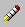
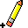

 Use the Eraser tool to erase a joint or member directly, without having to select it first.
The Eraser tool is located on the It can also be accessed from the Tools menu.
When the Eraser tool is in use, the mouse pointer appears as a pencil with a cross showing the effective location of the cursor .
When you move the Eraser tool over the Drawing Board, and are highlighted to indicate that the mouse pointer is directly over them.